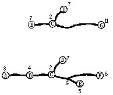
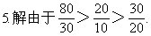
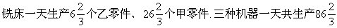
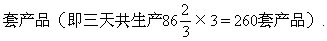

习题十三解答
1.答：糖厂建于C处总运费最省。如下图（a），根据“小往大处靠”的原则，把A靠到B；E靠到G，F靠到G，这样就成图（b）

同理：B靠到C，D靠到C，这时，C为16吨；G为11吨.最后，G靠到C。
2.答：A1运往B11吨；运往B22吨；运往B32吨。A2运往B31吨；运往B42吨。A3运往B42吨。
3.解：设截成17米长的钢筋x根，截成24米长的钢筋y根。则有17x+24y=239，可得非负整数解为x＝7，y=5。
4.解：截法1：2.9＋2.9＋1.5=7.3
截法2：2.1＋2.1＋1.5＋1.5＝7.2
截法3：2.9+2.1+2.1＝7.1
答：共用钢筋90根，其中40根用截法1；30根用截法2；20根用截法3.

所以：自动机床最善于生产乙零件；车床最善于生产甲零件.因此确定：自动机床只生产乙零件，车床只生产甲零件；铣床生产部分甲零件和部分乙零件，使其配套。
答：自动机床一天生产80个乙零件；
车床一天生产3×20＝60个甲零件；
